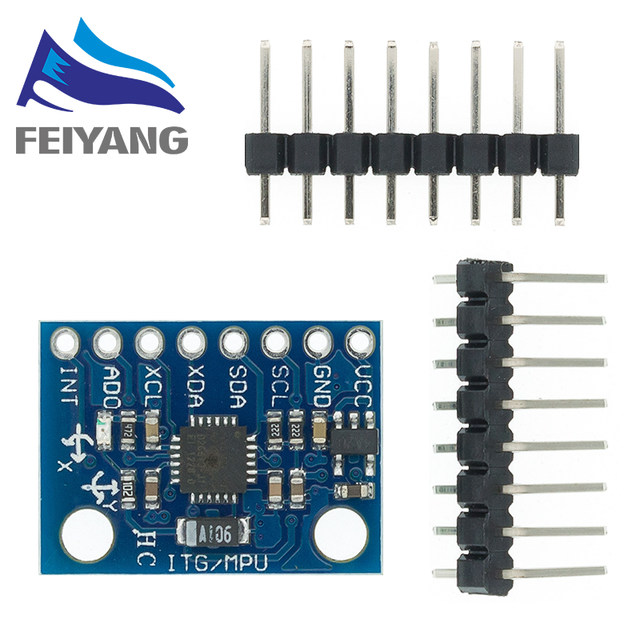
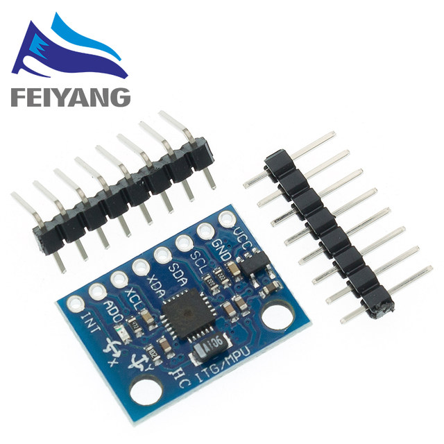
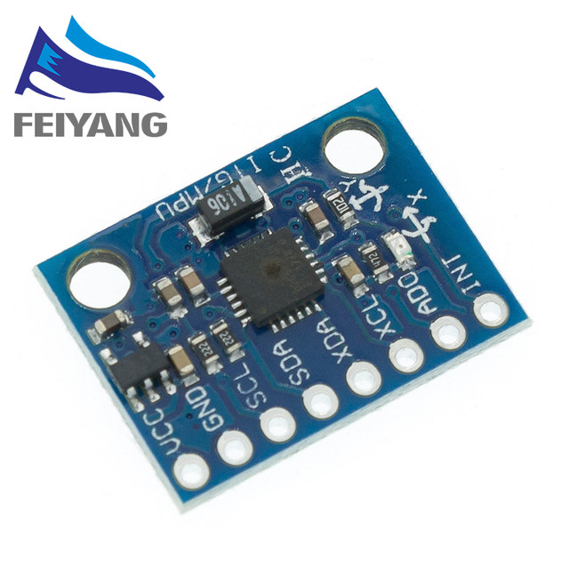
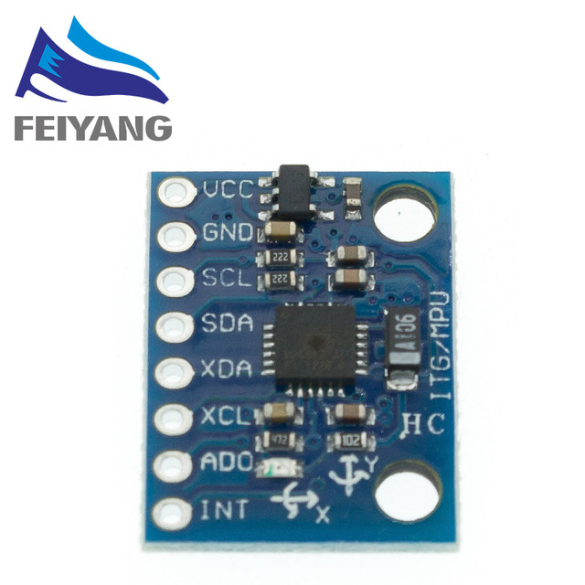
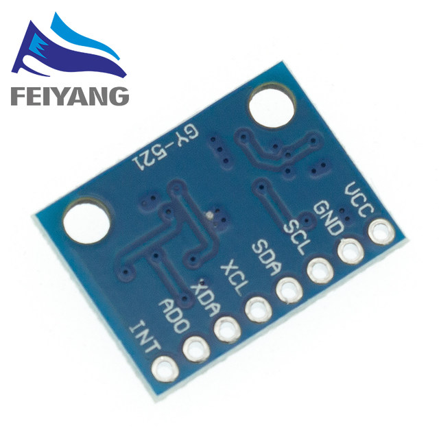
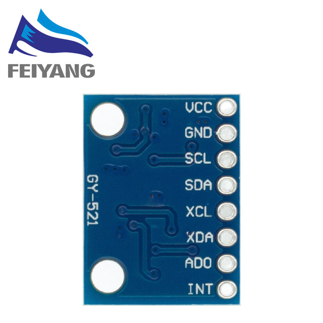

Product description:
Use the chip: MPU-6050
Power supply :3-5v (internal low dropout regulator)
Communication modes: standard IIC communications protocol
Chip built-in 16bit AD converter, 16-bit data output
Gyroscope range: ± 250 500 1000 2000 ° / s
Acceleration range: ± 2 ± 4 ± 8 ± 16g
Immersion Gold PCB machine welding process to ensure quality
Pin pitch 2.54mm





